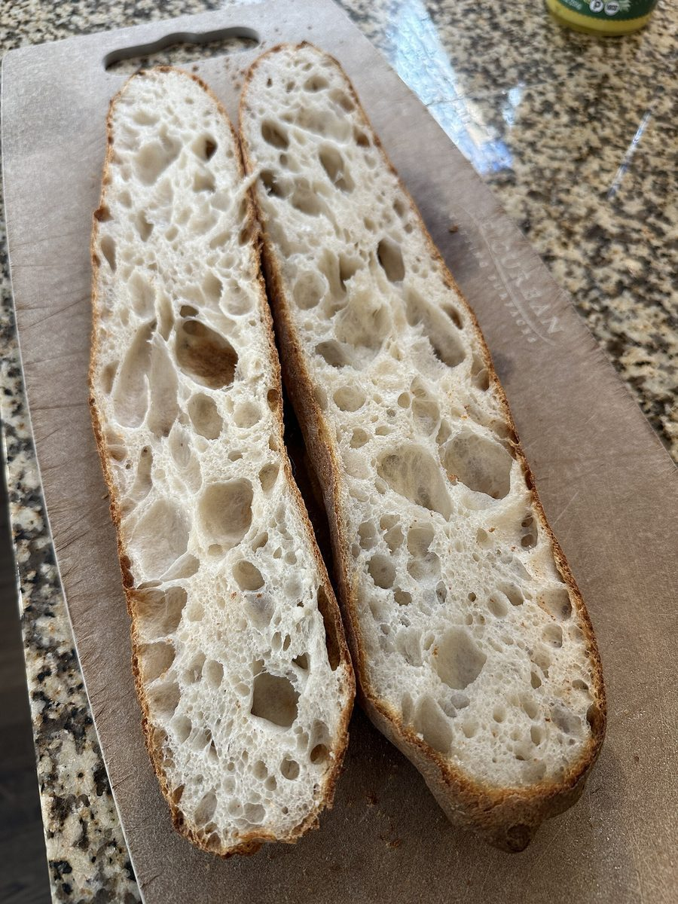

メニュー
メニューは準備中です


ご案内
メニュー・価格
| メニュー | 準備中 |
|---|---|
| 価格 | 準備中 |
| ご予約 | 準備中 |
提供内容が確認できていないため、掲載はしていません。詳しくはInstagramをご覧ください。


部位の見かた
メニューの代わりに、図の読み方
- 1上のハンドル上側の腕。握って下へ押し込む、てこの力点になる部分。
- 2下のハンドル下側の腕。もう片方の手で支える、土台になる部分。
- 3ヒンジ(支点)二本の腕をつなぐ軸。ここを中心に腕が開閉する。
- 4受けのくぼみ下の腕にある、ナッツを置いて転がらないようにする凹み。
- 5押さえ面上の腕の内側。ナッツに当たって力を伝える面。
- 6すべり止めの溝握り部分に刻んだ細い溝。手がすべるのを防ぐ。



写真はパンとコーヒーのイメージです。お店のものではなく、お店で提供している商品を示すものでもありません。